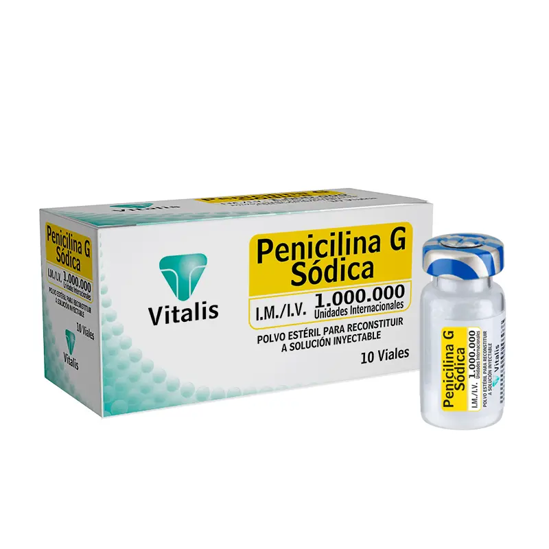
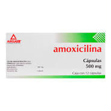
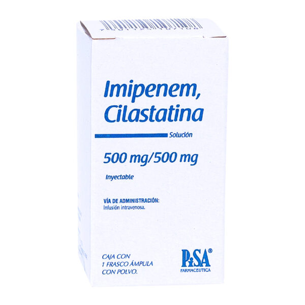

Mecanismo de Acción
- Penicilinas (Benzilpencilinas)
Inhiben la síntesis de la pared celular bacteriana al unirse a las proteínas fijadoras de penicilina (PBP) e inhibir la transpeptidación del peptidoglicano, lo que causa lisis celular.
Son bactericidas, especialmente activas en bacterias en crecimiento activo.
- Cefalosporinas (Amoxicilina, cefaclor)
Igual que penicilinas: inhiben la síntesis del peptidoglicano en la pared bacteriana uniéndose a PBPs. Bactericidas. Son más resistentes a betalactamasas que las penicilinas.
- Carbapenémicos Imipenem/Cilastatina
Inhiben la síntesis de pared celular por unión a PBPs. Son muy resistentes a betalactamasas. Cilastatina se administra junto con imipenem para inhibir la enzima renal dehidropeptidasa I, que degrada el imipenem.
Indicaciones Terapéuticas
- Penicilinas (Benzilpencilinas)
- Infecciones por estreptococos del grupo A (faringitis, escarlatina)
- Sífilis (Treponema pallidum)
- Meningitis por meningococo sensible
- Infecciones odontológicas
- Endocarditis bacteriana (por Streptococcus viridans)
- Erisipela, celulitis
- Cefalosporinas (Amoxicilina, cefaclor)
- Infecciones respiratorias (faringoamigdalitis, otitis media, sinusitis, bronquitis)
- Infecciones urinarias
- Infecciones de piel y tejidos blandos
- Profilaxis quirúrgica (cefazolina)
- Infecciones gonocócicas (cefixima o ceftriaxona)
- Meningitis bacteriana (cefotaxima, ceftriaxona)
- Carbapenémicos Imipenem/Cilastatina
- Infecciones graves hospitalarias: neumonía, sepsis, peritonitis
- Infecciones polimicrobianas (incluyendo anaerobios)
- Infecciones urinarias complicadas
- Infecciones por bacterias multirresistentes (enterobacterias BLEE, P. aeruginosa)
Contraindicaciones
- Penicilinas (Benzilpencilinas)
- Hipersensibilidad a penicilinas (riesgo de anafilaxia)
- Historia de reacciones alérgicas graves a betalactámicos (incluye algunas cefalosporinas y carbapenémicos)
- Cefalosporinas (Amoxicilina, cefaclor)
- Alergia a cefalosporinas
- Reacción anafiláctica a penicilinas (por posible alergia cruzada)
- Insuficiencia renal (ajustar dosis)
- Carbapenémicos Imipenem/Cilastatina
- Alergia a carbapenémicos o betalactámicos
- Insuficiencia renal (requiere ajuste de dosis)
- Convulsiones previas (riesgo aumentado)
Posología
- Penicilinas (Benzilpencilinas)Penicilina G sódica
- IV o IM: 1-4 millones de unidades cada 4 horas, dependiendo de la gravedad
- Dosis habitual: 12-24 millones de unidades al día en infecciones graves
- Para sífilis: 2.4 millones de unidades IM dosis única (benzatínica)
- Cefalosporinas (Amoxicilina, cefaclor)
- Amoxicilina: 500 mg cada 8 horas o 875 mg cada 12 horas (VO)
- Cefaclor: 250-500 mg cada 8 horas (VO)
- Duración: 7-10 días usualmente
- Carbapenémicos Imipenem/Cilastatina
- Adultos: 500 mg/500 mg cada 6-8 horas por IV
- Máxima: hasta 4 g/día
- En IR: ajustar intervalo o dosis
Reacciones adversas
- Penicilinas (Benzilpencilinas)
- Reacciones alérgicas: desde exantemas hasta anafilaxia
- Convulsiones en dosis altas o en insuficiencia renal
- Toxicidad renal (raro)
- Flebitis (si es IV)
- Alteración del microbioma intestinal
- Cefalosporinas (Amoxicilina, cefaclor)
- Reacciones alérgicas: exantema, urticaria
- Diarrea, náuseas, vómitos
- Sobreinfección por Clostridioides difficile
- Neutropenia (raro)
- Toxicidad renal o hepática (raro)
- Carbapenémicos Imipenem/Cilastatina
- Convulsiones (más con imipenem)
- Náuseas, vómitos, diarrea
- Rash, prurito
- Hepatotoxicidad (leve y transitoria)
- Neutropenia, trombocitopenia
Interacciones medicamentosas
- Penicilinas (Benzilpencilinas)
- Probenecid: aumenta niveles de penicilina al disminuir su excreción
- Anticonceptivos orales: disminución de eficacia
- Metotrexato: riesgo de toxicidad aumentada
- Cefalosporinas (Amoxicilina, cefaclor)
- Antiácidos: pueden disminuir absorción oral
- Aumenta riesgo de sangrado con anticoagulantes orales
- Alcohol: cefalosporinas tipo cefotetan pueden causar reacción tipo disulfiram
- Carbapenémicos Imipenem/Cilastatina
- Ácido valproico: reduce niveles y puede causar convulsiones
- Ciclosporina, ganciclovir: aumenta riesgo de neurotoxicidad
- Probenecid: aumenta niveles de imipenem
Presentacións
- Penicilinas (Benzilpencilinas)
- Frascos de polvo liofilizado de 1, 5, 10 millones de unidades
- Formas de liberación prolongada: penicilina benzatina IM
- Cefalosporinas (Amoxicilina, cefaclor)
- Cápsulas, tabletas o suspensión oral (125-500 mg)
- Frascos inyectables (cefalosporinas IV como ceftriaxona)
- Carbapenémicos Imipenem/Cilastatina
- Polvo para solución inyectable IV (250 mg / 500 mg de imipenem + cilastatina)
- Viales para reconstituir en 100 ml de solución IV